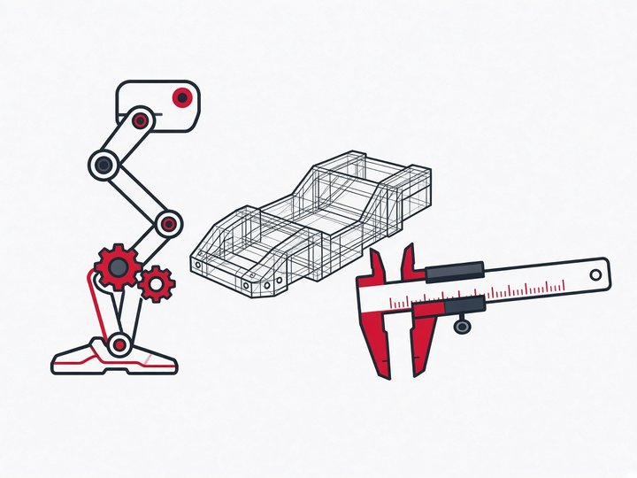

PolyU FENG AI & Robotics Club
Team
Supervisors, mentors and technical groups
The club is guided by PolyU academic staff and the Industrial Centre, advised by an External Advisory Board, and supported by a PhD-level mentor team who work with students week to week on design, code and testing. Students work in four technical groups. Each group has a few student representatives who coordinate its work; these are working roles, not ranks.
Club Director
Staff-Level Supervisors
The Chief Supervisor, the Industrial Centre's Coach Advisor for hands-on engineering, fabrication and workspace use, and PolyU academic staff from engineering and computing who advise on technical direction.
Prof. Weisong Wen
Chief Supervisor Aeronautical and Aviation EngineeringDr. LEE Kam-pui Jonathan
Coach Advisor Engineering Manager, Industrial CentreProf. Xi Shen
Co-Supervisor Aeronautical and Aviation EngineeringProf. Dongmei Huang
Co-Supervisor Electrical and Electronic EngineeringDr. Xu Nan, Nathan
Co-Supervisor Mechanical EngineeringProf. Zhenhui Jessie Li
Co-Supervisor ComputingPhD-Level Mentor Team
Postdoctoral and research students who mentor members inside their technical group.
Hu Jiahao
PhD Student UAV positioning and navigation MechanicalZhao Jiaqi
MPhil Student End-to-end UAV navigation Software & AIDr. Huang Feng
Postdoctoral Fellow Localisation and sensor fusion PerceptionXiao Naigui
PhD Student Multi-sensor UAV localisation PerceptionChen Yingming
MPhil Student UAV control and SLAM Software & AIYang Mokui
MPhil Student FPGA hardware acceleration ElectronicsTechnical Groups and Student Representatives

Mechanical Design
The robot's body: frames, legs, mechanisms and drive trains, from CAD to parts made in the Industrial Centre.
Details, requirements and photosElectronics & Embedded Systems
The robot's nervous system: power, circuit boards, motor drivers and microcontroller firmware.
Details, requirements and photosPerception & Sensors
The robot's senses: cameras, LiDAR, GNSS and IMU turned into positions, maps and detected objects.
Details, requirements and photosSoftware & AI
The robot's brain: ROS 2 software, control, planning, computer vision and reinforcement learning.
Details, requirements and photosExternal Advisory Board
Leading researchers and industry leaders from Hong Kong, mainland China, Macau, the United States and Germany. They advise the club on technical direction, give seminars and share experience from their labs and companies. Some serve as both academic and industry advisors.